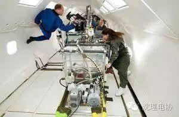
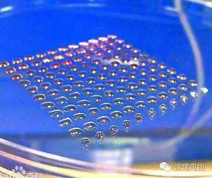
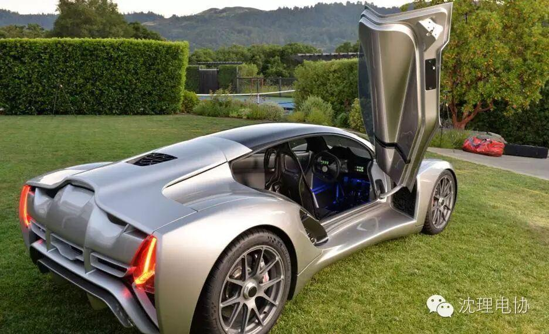

3D打印技术，你了解多少

3D打印技术想必大家都听说过，你或许能轻易地说出这是一种快速成型技术，然而你知道吗，这是一种以数字模型文件为基础，运用粉末状金属或塑料等可粘合材料，通过逐层打印的方式来构造物体的技术。
3D打印并非是新鲜的技术，这个思想起源于19世纪末的美国，并在20世纪80年代得以发展和推广。中国物联网联盟把它称作“上上个世纪的思想，上个世纪的技术，这个世纪的市场”
3D打印的对象可以是任何行业，只要这些行业需要模型和原型。例如：医疗、科学研究、产品原型、文物保护、建筑设计、食品产业等。
3D打印技术每一层的打印过程分为两步，首先在需要成型的区域喷洒一层特殊胶水，胶水液滴本身很小，且不易扩散。然后是喷洒一层均匀的粉末，粉末遇到胶水会迅速固化黏结，而没有胶水的区域仍保持松散状态。这样在一层胶水一层粉末的交替下，实体模型将会被“打印”成型，打印完毕后只要扫除松散的粉末即可“刨”出模型，而剩余粉末还可循环利用。

NASA人员在对3D打印机进行测试
3D打印技术带来的变化或将改变制造业的经济面貌，许多人认为，这项技术让商业完全中心化，逆转城市化进程，人们将不再需要工厂。

3D打印出的胚胎干细胞
1.2014年6月24日至6月26日，美海军在作战指挥系统活动中举办了第一届制汇节，开展了一系列“打印舰艇”研讨会，并在此期间向水手及其他相关人员介绍了3D打印及增材制造技术。
2.2014年8月，北京大学研究团队成功地为一名12岁男孩植入了3D打印脊椎，这属全球首例。
3.2014年10月，医生和科学家们使用3D打印技术为英国苏格兰一名5岁女童装上手掌。
4.2015年7月，美国旧金山的Divergent Microfactories(DM)公司推出了世界上首款3D打印超级跑车“刀锋

图为刀锋跑车
5.2015年6月22日报道，国营企业俄罗斯技术集团公司以3D打印技术制造出一架无人机样机，重3.8公斤，翼展2.4米，飞行时速可达90至100公里，续航能力至1.5小时。
6.2016年5月24日，全球首座功能完善的3D打印办公楼在阿联酋的旅游与商业中心迪拜举行开幕礼。该办公楼由一家中国公司负责3D打印，并在英国和中国进行了可靠度测试。
主要为电子技术与应用协会效力的是一台Prusa I3增强版桌面型3D打印机。它的打印最大尺寸为200*200*200mm（可扩展），定位精度X、Y轴10微米，Z轴定位精度1.5微米，最小打印层厚为0.06毫米。喷嘴直径，0.4毫米。最高空程速度：250毫米/秒。最高打印速度：150毫米/秒。最高挤出温度：250摄氏度。最高热床温度：120摄氏度 。最高送料速度：100毫米/秒。控制芯片为：Arduioo ATmega2560 R3微控制器。
电子技术与应用协会的3D打印机
3D打印机的应用为电协技术的成长与设计实现提供了平台。电协很多作品上都有3D打印机所制作的零件。可以说，3D打印机改变了电协传统的设计制作方案，提供了一种更高高效便捷的设计方式。
打印机参数提供特别鸣谢：
电协机械队队长——喻鹏飞

编辑：潘俊儒
图片：高天
（部分图片源于网络）